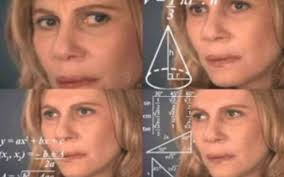

Dados do autor

Gerador de Frases
Nome : Igor Rafael da Silva Pereira
Idade : 21 anos
E-mail : Igorrafaelsp19@gmail.com
Formação : Estudante de Engenharia e da vida blablabla
Local de Nascimento: País Manaus
Comida preferida: Tudo que for cheiroso